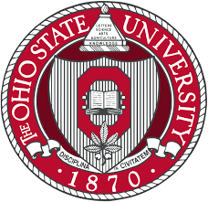
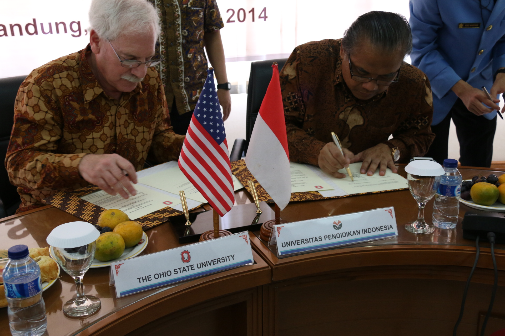

Kerja Sama
Sebagai salah satu negara bagian di Amerika Serikat, Ohio memiliki peran strategis dalam
mendukung implementasi SDGs, terutama pada Goal 7: Affordable and Clean Energy.
Ohio merupakan contoh nyata bagaimana sebuah negara bagian dapat memainkan peran
signifikan dalam pencapaian tujuan pembangunan global. Dalam beberapa tahun terakhir,
Ohio telah mengambil langkah konkret untuk meningkatkan akses terhadap energi bersih yang
terjangkau melalui proyek-proyek energi terbarukan. Salah satu proyek terbesar di negara bagian ini
adalah pembangunan ladang angin Blue Creek Wind Farm yang terletak di bagian utara Ohio. Ladang angin
ini merupakan salah satu yang terbesar di kawasan tersebut, dengan kapasitas untuk menyediakan energi bersih
bagi ribuan rumah tangga. Tidak hanya itu, proyek ini juga berhasil menciptakan ratusan lapangan kerja bagi masyarakat
lokal, memberikan dampak positif bagi ekonomi daerah, sekaligus memperkuat infrastruktur energi terbarukan.

Selain pengembangan ladang angin, Ohio juga berfokus pada pengurangan emisi karbon melalui berbagai
kebijakan yang mendukung energi bersih. Pemerintah federal Amerika Serikat memberikan dukungan penuh
kepada negara bagian ini melalui insentif pajak dan program pendanaan untuk proyek energi terbarukan.
Di tingkat lokal, komunitas-komunitas di Ohio juga terlibat dalam memastikan proyek-proyek ini berjalan dengan sukses,
dengan memberikan masukan dan dukungan kepada pemerintah serta perusahaan terkait. Hal ini menciptakan sinergi yang kuat antara
berbagai pihak, dari pemerintah hingga masyarakat, dalam mendukung transisi menuju energi yang berkelanjutan.
Di luar kebijakan dan infrastruktur, Ohio juga menunjukkan komitmennya terhadap tujuan SDGs melalui pendidikan dan
penelitian. Universitas Ohio menjadi salah satu pusat inovasi yang aktif dalam mengembangkan solusi untuk tantangan
energi di masa depan. Melalui berbagai program penelitian, universitas ini berfokus pada peningkatan efisiensi energi,
pengembangan teknologi baru untuk energi terbarukan, dan pelatihan generasi muda agar lebih sadar akan pentingnya transisi
menuju sumber energi yang bersih. Tidak hanya itu, universitas ini juga mengadakan seminar dan lokakarya bagi masyarakat umum
untuk meningkatkan pemahaman mereka tentang pentingnya energi terbarukan dalam kehidupan sehari-hari.

Dengan langkah-langkah tersebut, Ohio telah berhasil membangun ekosistem yang mendukung pencapaian SDGs secara holistik.
Kombinasi antara kebijakan pemerintah, investasi dalam teknologi, partisipasi masyarakat, dan edukasi publik menciptakan model keberlanjutan
yang dapat ditiru oleh negara bagian lain di Amerika Serikat maupun negara lain di dunia. Ohio membuktikan bahwa dengan kolaborasi yang kuat
antara berbagai pihak, tujuan besar seperti SDGs bukan hanya visi, tetapi dapat diwujudkan menjadi kenyataan yang membawa manfaat nyata bagi
generasi saat ini dan yang akan datang. Upaya ini tidak hanya relevan untuk kebutuhan lokal, tetapi juga memberikan kontribusi besar terhadap
tantangan global seperti perubahan iklim dan keberlanjutan lingkungan.